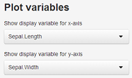
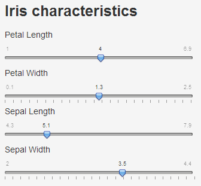
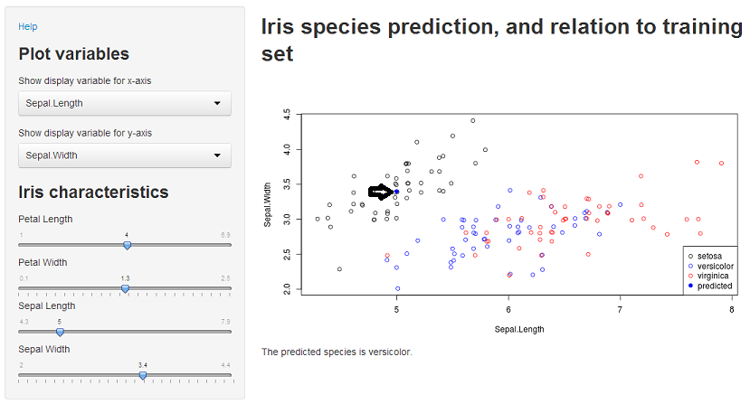

- To predict the species of iris given sepal width and length, and petal length and width
- To display the new potential iris along with other measured irises
John Johnson


The prediction is made through a classification tree. For example, suppose we wanted to classify an iris with sepal length of 3.0 cm, sepal width of 1.5 cm, petal length of 3.0 cm, and petal width of 1.5cm, we would proceed as follows:
library(rpart)
data(iris)
fit <- rpart(Species ~ ., data = iris)
potential <- data.frame(Sepal.Width = 1.5, Sepal.Length = 3, Petal.Width = 1.5,
Petal.Length = 3)
as.character(predict(fit, potential, type = "class"))
## [1] "versicolor"
Because of the way classification trees work, a prediction may be different from its apparent neighbors.
